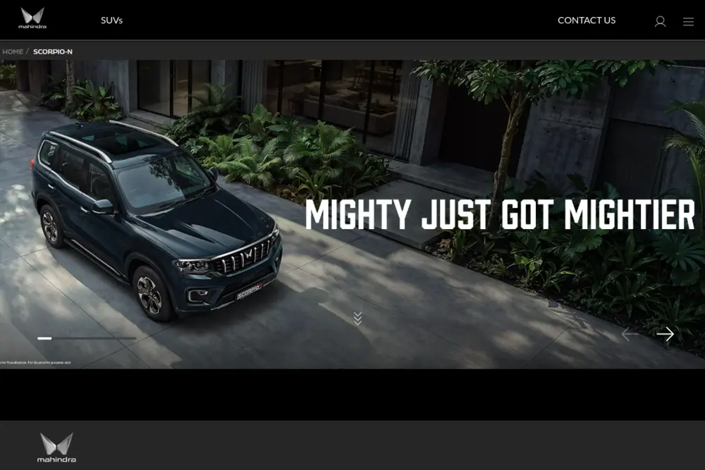

Complex content, tight timelines.
Vehicle pages needed accurate content across components, languages and screen sizes. Launch work added time pressure and many interdependent checks.
I'm Nitesh. I turn briefs into usable web experiences, publish confidently in content management systems, and explore how AI can remove tedious work. This page shows how I approach problems—not just screenshots of the result.
Mahindra Automotive · Sitecore 9 · G Tech Solutions
Web content, components, QA and publishing

View live reference ↗Vehicle pages needed accurate content across components, languages and screen sizes. Launch work added time pressure and many interdependent checks.
Configured components and data sources, updated localized content and metadata, made basic HTML/CSS adjustments, and coordinated fixes through QA and publishing.
Good publishing isn't just clicking “go live.” It's managing dependencies, checking details, communicating blockers, and knowing what must be tested before release.
Project context: I contributed as part of a wider team. The current live page may differ from pages and components published during my employment; platform-wide launch results should not be attributed to one person.
Wix and CMS delivery: content, navigation, responsive layouts and ongoing improvement.
“Make the website better” isn't an actionable requirement. Clarifying the audience, priority pages, required content and approvals makes development more effective.
Organize navigation, establish a clear page hierarchy, improve readability, then refine responsive layouts and content where users interact.
Client sites must remain useful after launch. Consistent page structures, clear handoffs and manageable editing workflows matter.
These are client references. Screenshots and live websites illustrate projects; no conversion or traffic lift is claimed without verified analytics.
Dental AI receptionist pilot · Voice workflow, webhooks and structured handoff
An AI might answer a call, but staff still need a useful summary, an action and a clear handoff when something needs attention.
Classify a request, identify its intended next step and create a consistent JSON handoff that could be processed by a webhook.
Choose a fictional caller scenario below to inspect the simulated response, intent, routing and sample payload. No personal information is collected.
These scenarios simulate an intake flow. They do not place calls, access clinic systems, or transmit data.
Ready to simulate.
// Run a scenario to reveal the simulated handoff payload.
The production readiness, testing and results of the real-world pilot are not represented here; those details should be documented separately once confirmed.
Whether it's a CMS launch, a small business website or an AI workflow prototype, I enjoy understanding the problem, building a workable solution and improving the experience.